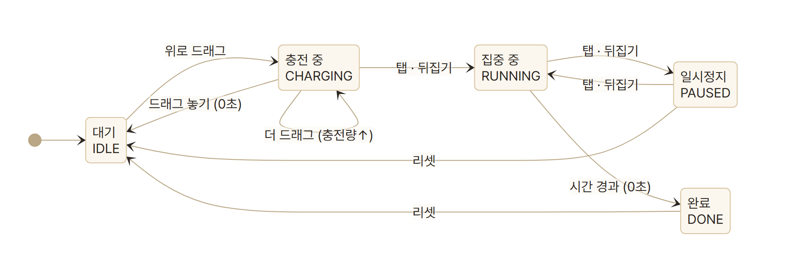
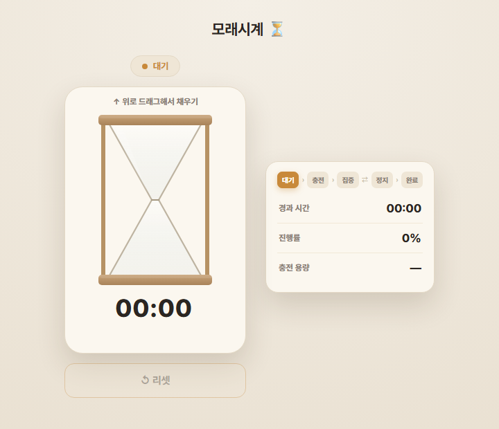
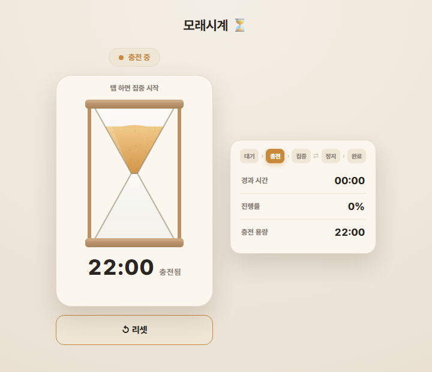
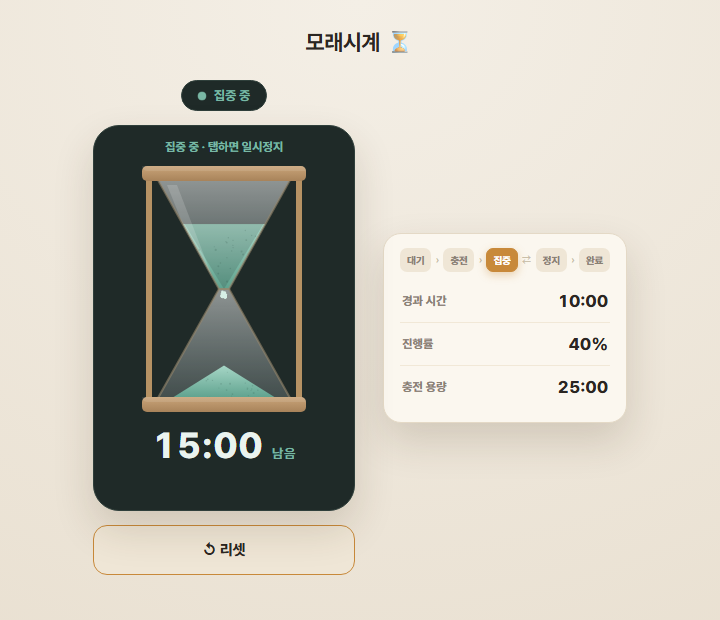
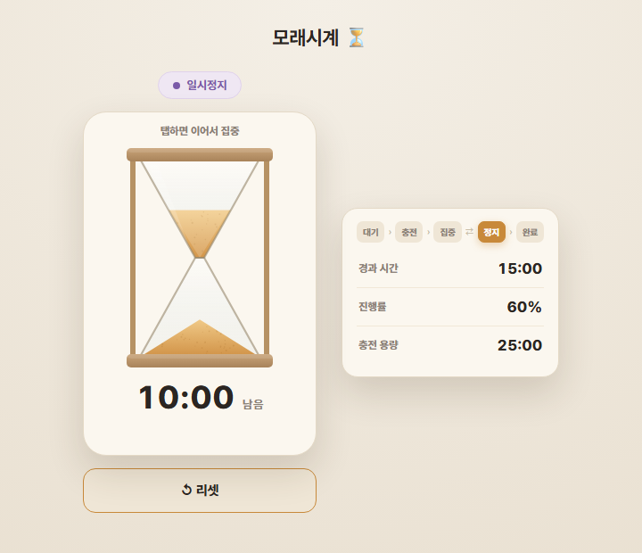
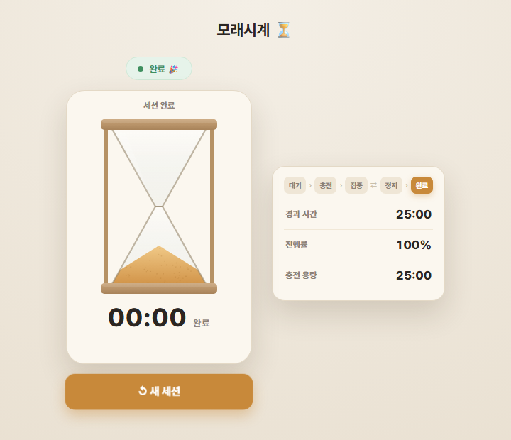

분해 → 패턴 인식 → 추상화 → 플로우차트 → 작동 프로토타입
복잡한 시스템을 가장 작은 요소까지 하향식(Top-down)으로 쪼갠다. 겉모습은 배제하고, 입력 → 저장 → 처리 → 출력 → 종료 라는 사용 시퀀스가 트리에 온전히 드러나도록 했다. 가장 저수준은 모두 수치 또는 참/거짓으로 측정 가능하다.
[고수준 · 목적] 모래시계 : 중력을 동력 삼아, 고정된 양의 모래가 일정한 속도로
떨어지는 데 걸리는 시간을 시각적으로 측정하는 장치
├─ [중수준 1] 입력 — 물리적 반전(뒤집기)으로 측정을 초기화·시작
│ ├─ 1-A · 반전 상태 isFlipped : True / False (상태)
│ ├─ 1-B · 반전 이벤트 flipEvent : 발생(1)/없음(0) (입력 이벤트=트리거)
│ └─ 1-C · 반전 시각 flipTimestamp : 측정 시작 기준점(수치)(입력 이벤트)
│
├─ [중수준 2] 저장 — 떨어질 모래(에너지)를 상부 챔버에 적재
│ ├─ 2-A · 전체 모래량 totalSand (상수) : 100% (= 측정 시간 최댓값)
│ ├─ 2-B · 상부 모래량 topSand (독립 변수) : 0~100% ← 유일한 독립 상태변수
│ └─ 2-C · 하부 모래량 bottomSand (파생) : = 100 − topSand
│
├─ [중수준 3] 처리 — 중력이 좁은 목으로 모래를 일정 속도로 내려보냄
│ ├─ 3-A · 낙하 속도 flowRate (상수) : 단위시간당 %
│ ├─ 3-B · 단위시간 흐름 tick (반복 단위·loop) : dt초마다 topSand 1회 갱신
│ ├─ 3-C · 경과 시간 elapsed (파생) : (100 − topSand) ÷ flowRate (초)
│ └─ 3-D · 잔여 시간 remaining (파생) : topSand ÷ flowRate (초)
│
├─ [중수준 4] 출력 — 모래 높이·흐름의 변화로 시간을 시각 표시
│ ├─ 4-A · 상부 기둥 높이 topHeight : 0~H (mm/px)
│ ├─ 4-B · 하부 더미 높이 bottomHeight : 0~H
│ ├─ 4-C · 진행률 progress (파생) : elapsed ÷ 총시간 = 0.0~1.0
│ └─ 4-D · 완료 신호 isDone : (topSand==0) → T/F ← 사용자가 관측하는 출력
│
└─ [중수준 5] 종료 — 상부 모래가 0이면 측정 종료·정지
└─ 5-A · 정지 상태 isIdle : 흐름 정지(T) / 흐름 중(F)
1-2. 조작(액션) → 데이터 변화 규칙
목적 달성에 거치는 조작은 2종뿐. 각 조작이 어떤 데이터를 어떻게 바꾸는지 명시한다.
| 조작 (액션) | 변하는 데이터 | 변화 규칙 | 트리거 시점 |
|---|---|---|---|
| A. 뒤집기 (flip) | topSand, bottomSand, isFlipped, flowRate | topSand←100, bottomSand←0, isFlipped 토글, flowRate 방향 반전 | 사람이 뒤집을 때 (외부) |
| B. 시간경과 (tick, dt) | topSand, bottomSand | topSand ← max(0, topSand − flowRate·dt), bottomSand ← 100 − topSand | 작동 중 매 단위시간 (내부 자동) |
tick → topSand 갱신 → (elapsed·remaining·progress·isDone) 재계산 — 파생값은 독립적으로 변하지 않고 topSand가 바뀐 직후에만 다시 계산되는 읽기 전용 값이다.1-3. 입력 → 내부상태 → 출력 (LO1)
| 데이터 종류 | 요소 |
|---|---|
| 입력(외부) | flipEvent, flipTimestamp |
| 상수 | totalSand, flowRate |
| 독립 변수 | topSand (유일) |
| 파생값 | bottomSand·elapsed·remaining·progress·isDone = f(topSand) |
| 입력 / 출력 분리 | 요소 |
|---|---|
| 입력 | 뒤집기 — flipEvent |
| 출력 | 모래 높이, progress, 완료신호 isDone (시각만) |
| 상태 플래그 | isFlipped, isIdle (T/F) |
분해 요소 사이의 작동 규칙을 비교 매트릭스로 정리한다. 1주차이므로 모래시계 컬럼만 채우고, 나머지 두 사물은 차주 과제로 비워 둔다.
| 비교 기준 (분해 속성) | 모래시계 | 태엽 오르골 | 기계식 스톱워치 |
|---|---|---|---|
| 동력원 Energy | 중력 위치에너지 — 상부 모래의 무게. 외부 전력 없이 한 번 적재된 위치에너지를 소모 | (2주차) | (3주차) |
| 입력 방식 Trigger | 물리적 반전(뒤집기) 1종. 상↔하 이산 토글 이벤트 | — | — |
| 출력 방식 Output | 시각 출력만 — 상/하 모래 높이 변화·흐름. 소리·진동·알림 없음 | — | — |
| 상태 제어 Control | 무조건 연속 흐름. 시작 후 일시정지 불가, 정지는 모래 소진 시 자동. 리셋·역전은 반드시 뒤집어야만 가능 | — | — |
| 측정 대상·단위 | 고정 시간 1종(totalSand ÷ flowRate). 눈금 없는 아날로그 | — | — |
| 에너지 저장 형태 | 상부 챔버의 모래 더미(위치에너지). 재충전 = 뒤집기 | — | — |
| 정밀도·제약 | 낙하 속도가 습도·모래량에 따라 변동(오차 큼). 누적·랩 측정 불가 | — | — |
tick마다 topSand −= flowRate·dt 반복 · 세션 루프(macro): 뒤집기→소진→다시 뒤집기로 측정 전체 반복.※ 공통 패턴 / 차이 패턴은 세 사물을 나란히 놓는 차주 이후에 도출 — 1주차에서는 작성 생략 가능.
물리적 형태('모래알', '중력', '유리관')를 걷어내고, 디지털 UI에서 다룰 수 있는 보편 속성으로 바꾼다.
상수 Constant
CAPACITY 충전 가능 에너지 최댓값 ← totalSandDRAIN_RATE 단위 시간당 소모량 ← flowRate변수 Variable
energy 0~CAPACITY — 유일한 독립 상태변수remaining, progress = f(energy) (읽기전용)상태 State (항상 단일 판정 가능)
IDLECHARGINGRUNNINGPAUSEDDONE
트리거 Trigger
energy 증가energy 보존 · D 재개(외부)energy==0 → 완료 · RESET → 대기분해 → 추상화 명칭 매핑 (의도적 일반화)
| 모래시계 종속 명칭 | → 도메인 중립 |
|---|---|
totalSand | CAPACITY |
flowRate | DRAIN_RATE |
topSand (독립변수) | energy |
isFlipped (뒤집기) | 상태 전환 트리거 B/C/D |
flipTimestamp·flipEvent·topHeight/bottomHeight는 energy·progress로 충분히 표현 → 제외.PAUSED(일시정지)·charged(세션 충전량)는 원물엔 없지만 추가.추상화 강도 점검 — 스코프 판별 3조건
① 충전 가능한 유한 자원 · ② 시간 비례 단조 소모 · ③ 잔량으로 진행도 표현 — 셋 다 충족 시 스코프 내.
| 대상 | ① 충전 | ② 소모 | ③ 진행도 | 판정 |
|---|---|---|---|---|
| 모래시계 / 오르골 / 스톱워치 | ✓ | ✓ | ✓ | 스코프 내 |
| 휴대폰 배터리 · 전기포트 | ✓ | ✓ | ✓ | 스코프 내 |
| 줄자 | ✗ | ✗ | ✗ | 제외 (소모·시간 없음) |
| 달력 | ✗ | △ | ✗ | 제외 (충전·잔량 없음) |
| 메트로놈 | △ | ✗ | ✗ | 제외 (반복 진동) |
분해한 사물(모래시계)을 그대로 옮기지 않고, 위 추상화 모델에서 파생한 새 인터페이스를 설계한다.

상태 전이표 (모든 상태 × 모든 입력 — 충돌 없음 증명)
| 상태 ＼ 입력 | dragUp 위로 드래그 | dragEnd 놓기 | tap 뒤집기 | tick→0 (auto) | reset |
|---|---|---|---|---|---|
| IDLE 대기 | → CHARGING | no-op | no-op | N/A | → IDLE |
| CHARGING 충전 | energy↑ (자기전이) | energy>0 ? →CHARGING : →IDLE | → RUNNING | N/A | → IDLE |
| RUNNING 집중 | no-op (잠금) | no-op | → PAUSED | → DONE (auto) | → IDLE |
| PAUSED 일시정지 | no-op | no-op | → RUNNING | N/A | → IDLE |
| DONE 완료 | no-op | no-op | no-op | N/A | → IDLE |
드래그·탭·리셋은 사람이 주는 외부 입력, tick(시간 경과)은 내부 자동 트리거(RUNNING에서만 동작). no-op=입력은 오지만 무시 / N/A=그 상태에선 발생하지 않음. 충전 드래그는 위로(dy>0)일 때만 대기·충전에서 동작 → 모든 칸이 단일 결과로, 충돌하는 상태 정의가 없다.플로우차트의 상태 전이 로직을 그대로 옮긴 의존성 없는 단일 HTML. 아래에서 바로 조작할 수 있다.
작동 화면 (상태별 스크린샷)




